Open the 3D viewer ↗InteractiveDrag to orbit, scroll to zoom. About a 25 MB download.
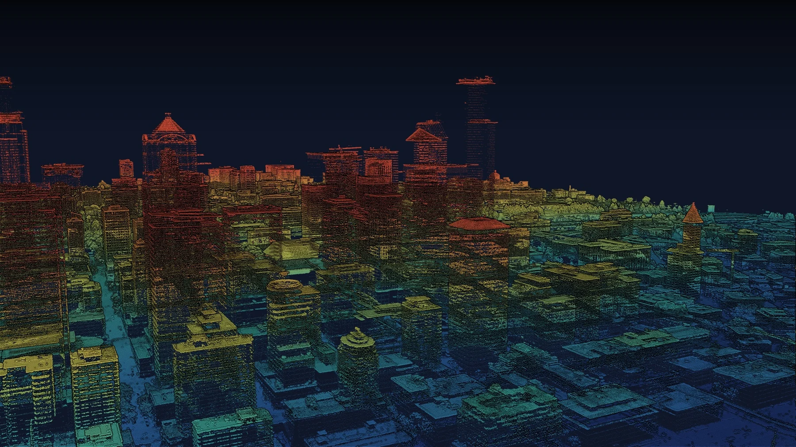
Point-cloud cityA flythrough frame. Every dot is one laser return, colored by height.
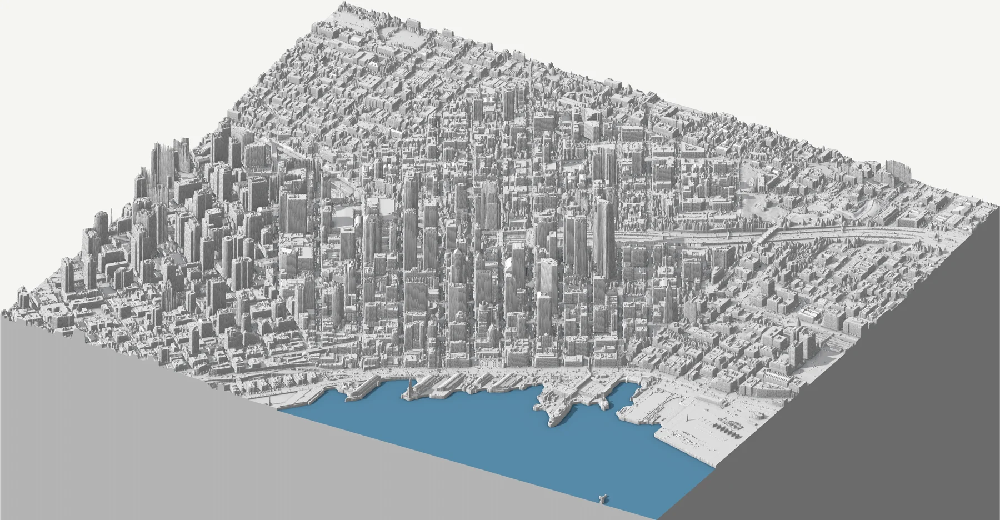
City as a modelThe elevation surface tilted and lit like an architect's model.
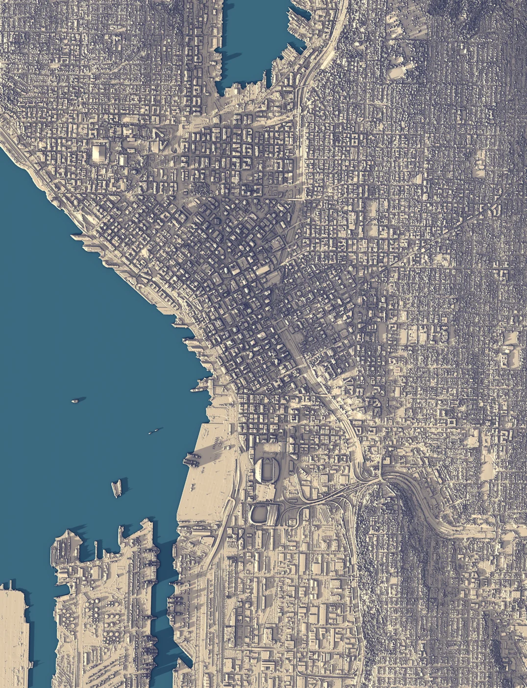
Light on reliefTop-down elevation under directional light.
Single buildings and a tree lifted out of the city's point cloud, under an afternoon sun from the southwest: warm where it reaches, blue in shadow.
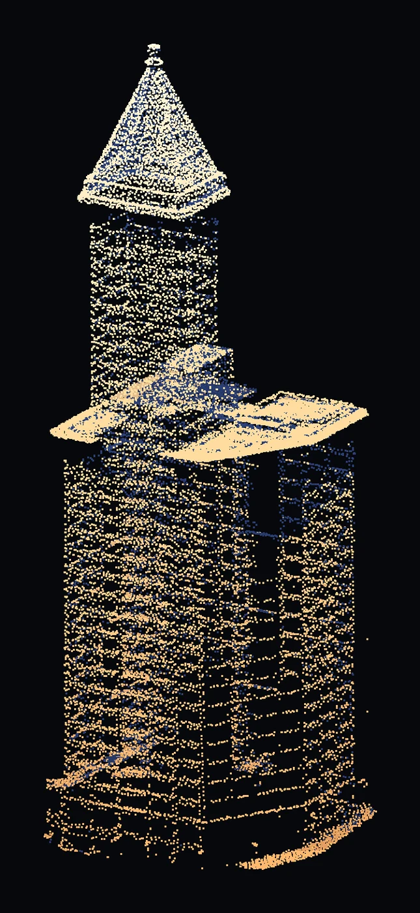
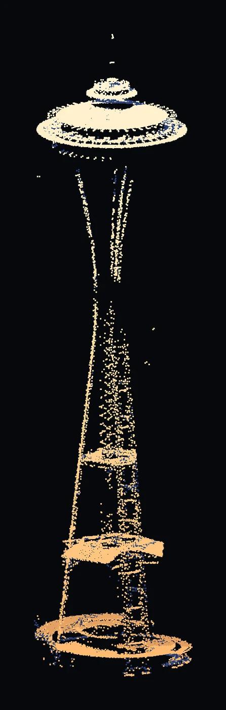
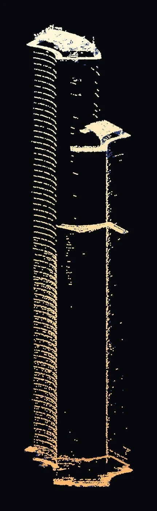
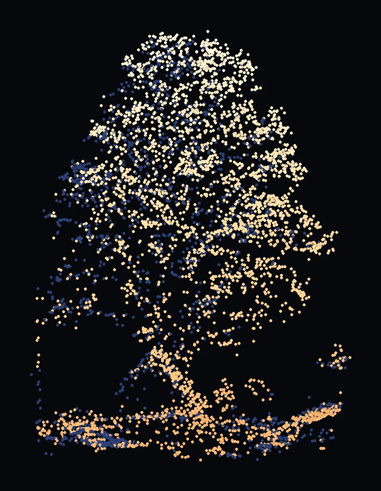
Smith Tower, Space Needle, Columbia Center, Green Lake treeThe saucer hid the Needle's upper legs from the plane; those points are filled in. Columbia's dark glass sends few pulses back, so its neighbours stay in, faint. The tree stands 101 ft on the north shore.
Explore in 3D, every scanned point, with the city around it. Switch between sun, frost and height.
Open as a point cloud ↗Point-cloud viewThe same points, colored by elevation. Switch looks with the button in the viewer.
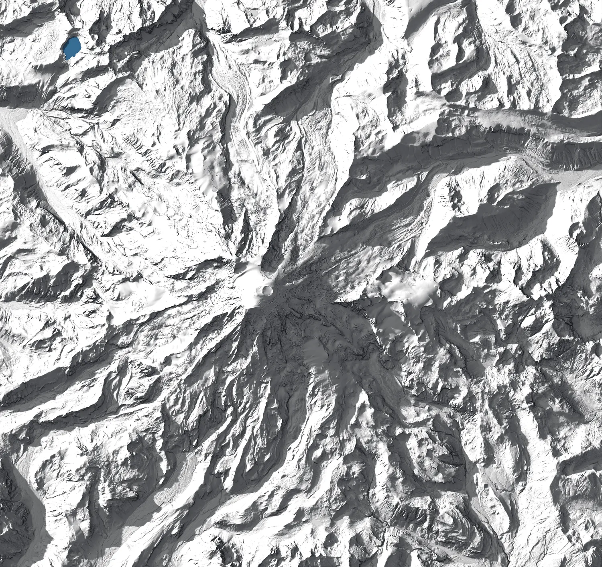
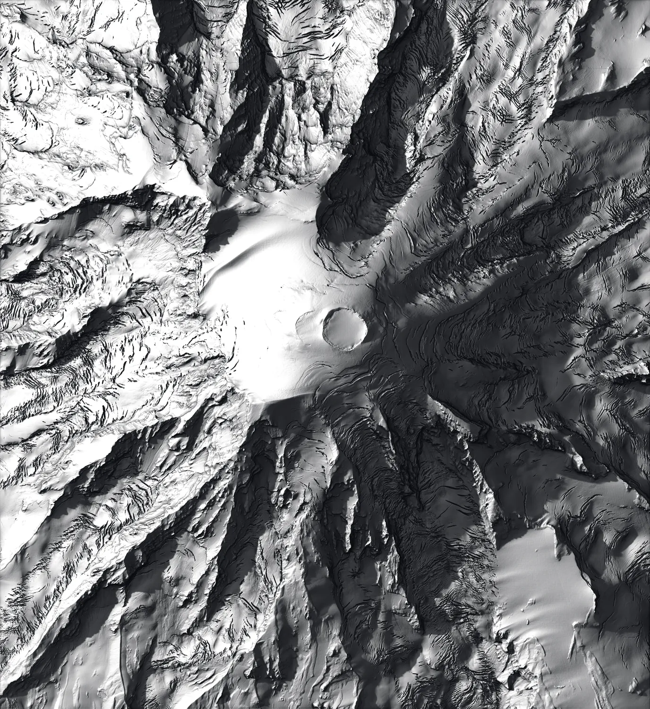
Model / summitThe full cone, and the summit craters up close.
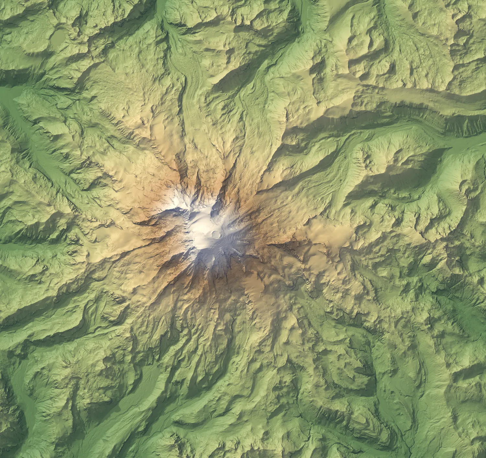
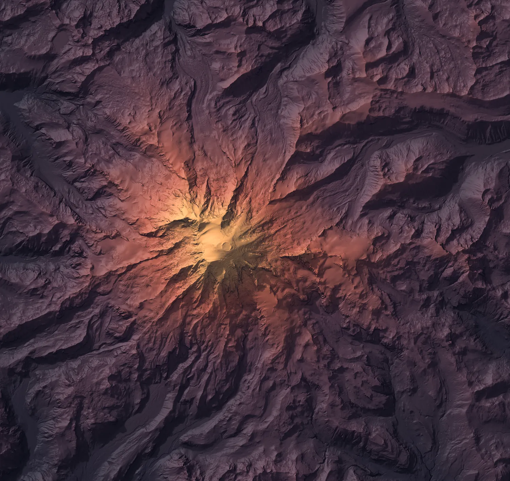
Classic / duskColored by elevation, and lit like late evening.
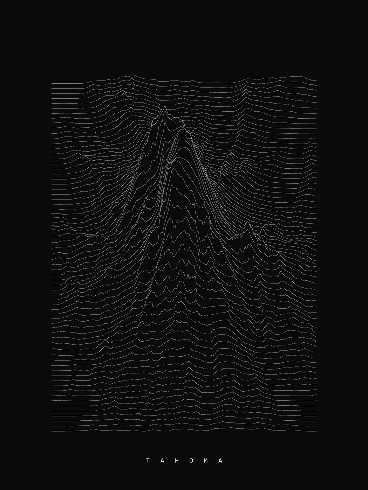
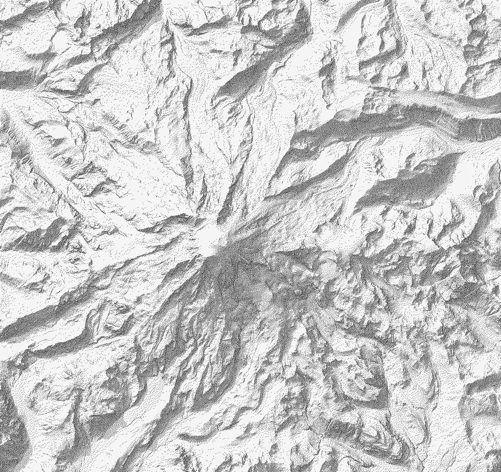
Ridgelines / stippleStacked height profiles, and 260,000 dots for a pen plotter.
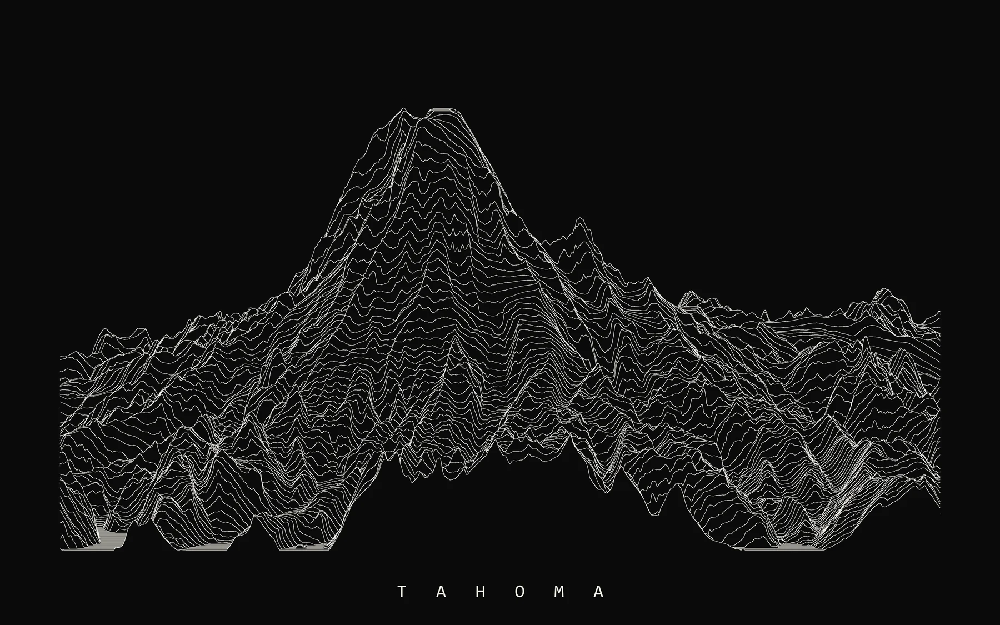
Ridgelines, side on160 profiles seen from the south, so the cone rises out of its foothills.
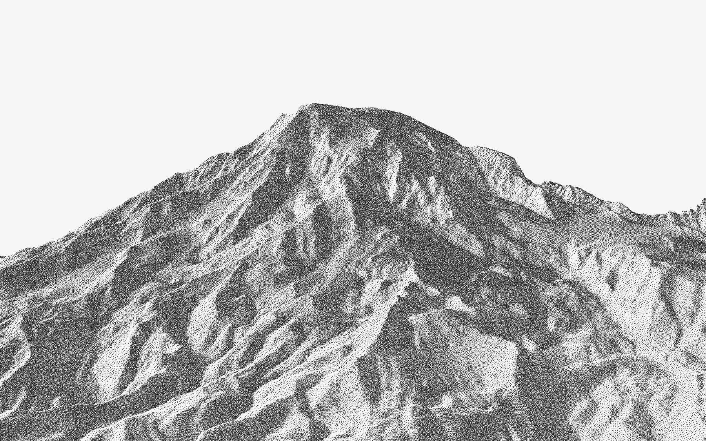
Stipple, side onA perspective from the south, turned into 260,000 dots for a pen plotter.Sun hoursDirect sun on the solstices. North walls stay dark all December.ViewshedsWhat the Mount Fremont Lookout and Paradise can see, lit.From MowichA perspective camera above the northwest foothills.
Built with relief-renderer: Python relief and perspective renderers, and a GPU point-cloud renderer. Data: King County West 2021 and Rainier Wali 2022 LiDAR, via the Washington Lidar Portal ↗. ← Back to the collection